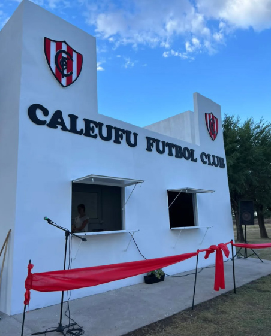

El club celebra la inauguración de su nueva cantina
Caleufú, en un ambiente de celebración y camaradería, el Caleufú Fútbol Club ha inaugurado oficialmente su nueva cantina, un espacio renovado que promete convertirse en el punto de encuentro favorito de los socios, hinchas y jugadores del club.
